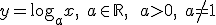
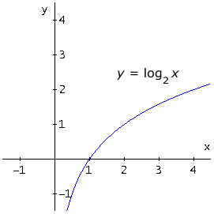

Funciones elementales
Funciones logarítmicas
Una función logarítmica si tiene la variable en un logaritmo:

Su dominio es (0,∞) y su recorrido R, y no es simétrica. Es decreciente si 0 < a < 1, y creciente si a > 1, es su dominio. No tiene extremos. La gráfica siempre pasa por (1,0).
Ejemplos:
Podemos ver la simetría de las funciones exponencial y logarítmica, al ser inversa la una de la otra:

Ejercicio. Dibuja la gráfica de f(x) = log2x
Solución:

Obra publicada con Licencia Creative Commons Reconocimiento No comercial Compartir igual 4.0